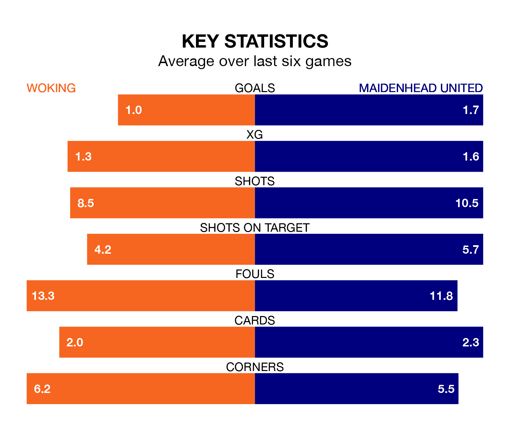

Maidenhead United face Woking on Saturday seeking to protect their long unbeaten run in National League.
Maidenhead are unbeaten in seven, with five wins and two draws, ahead of the 3pm kick-off.
They face a Woking team who have won just two and lost five over the same number of games.
In Craig Alexander Ross, Maidenhead can rely on one of the league's safest pair of hands. He has kept seven clean sheets in his 24 appearances this season, and only one other 'keeper – Halifax Town's Samuel William Johnson – has been able to prevent the opposition scoring on more occasions in National League.
In Woking's net, William Jääskeläinen has six clean sheets in 18 games.
The Cardinals are 17th in the table after 23 games, of which they have won seven and drawn four, earning 25 points.
United are four places ahead of the home team in 13th, with seven wins and nine draws putting them on 30 points.
In the last five years, Woking and Maidenhead have played each other on nine occasions. Woking won four of them, Maidenhead three, and they drew twice.
On average, the Cardinals scored 1.2 goals and Maidenhead 0.9 in those matches.
Their last meeting was on September 2, when they played out a 0-0 draw.
With 26 goals in 23 games so far this season, Woking are scoring at below the league average rate with 1.1 goals per game. But they are conceding fewer than average too, letting in 31 goals at a rate of 1.3 per game.
The visitors are also below average scorers, with 1.2 goals per game, compared to a league average of 1.5. They have conceded 1.4 goals per game.
Woking's last match was on December 16, a 2-1 win against Dorking Wanderers, with Olatunji Akinola and Paul Osew getting the goals for the Cardinals.
Maidenhead beat Kidderminster Harriers 1-0 last time out, also on December 16, with Casey Pettit on the scoresheet.
Updated: 12:43, 20/12/23